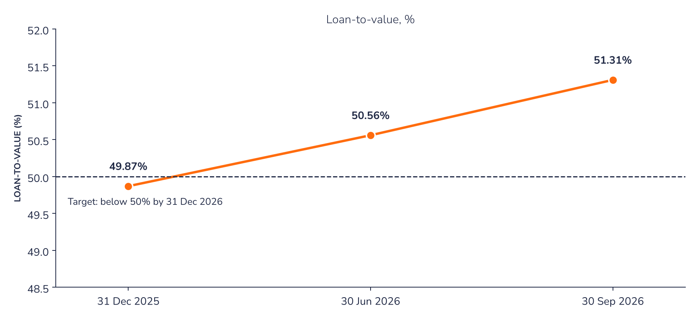
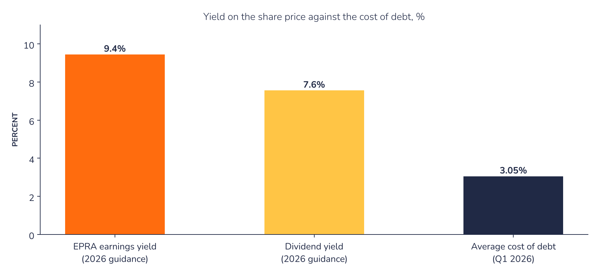

Ad-hoc opinion · Real estate
Charts
Chart 1 · XIOR: loan-to-value against the 50% target
Loan-to-value at each reporting date, %; the dashed line marks management's ceiling, to be met by 31 December 2026

Sources: Syz Research, Bloomberg, company data
Chart 2 · XIOR: what the share yields against what debt costs
Dividend and EPRA earnings yields on the 20 November 2026 close and 2026 guidance, against the average cost of debt in the first quarter of 2026, %

Sources: Syz Research, Bloomberg, company data